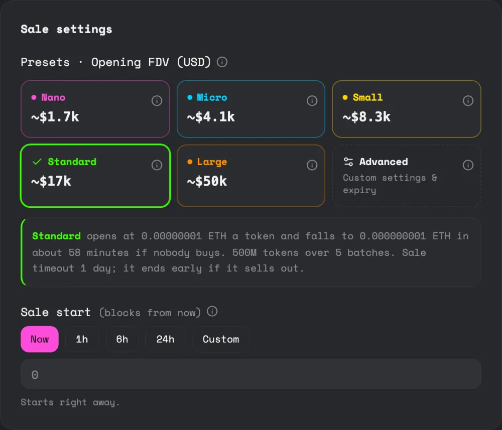
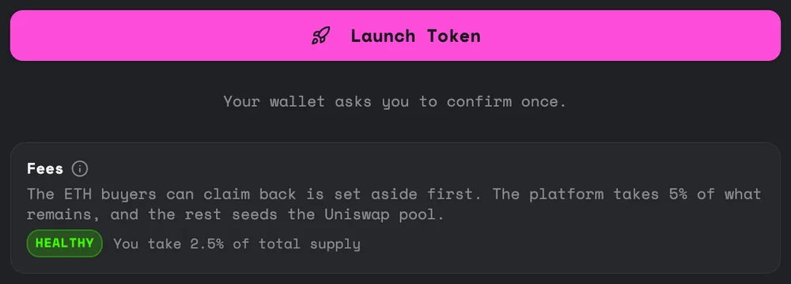

Launch a token
This is the full walkthrough for launching, from filling in the form to the market going live. Most of it happens automatically.
Before you start
You need a wallet on Ethereum with a little ETH for gas, and you'll be asked to confirm you're eligible to use punk.fun on your first visit. punk.fun isn't available in the UK or in sanctioned countries. The launch form makes the token for you. If there's a fee for creating a token, it shows at the top of the launch form before you sign.
You don't need to connect a wallet to start. You can open the launch form, fill it in and pick your settings first, then press Connect wallet to launch at the bottom when you're ready. If the form can't find a wallet in your browser, it shows you how to get one there instead. The one exception is linking your X account, which needs your wallet connected first. If your browser allows it, the form keeps what you type for 24 hours after your last change, so a reload doesn't lose it, for example after you install a wallet. Your token image and X account aren't kept, so add those again.
Step 1: Your token

| Field | What it's for |
|---|---|
| Name and ticker | Required. How your token shows up everywhere. The ticker is up to six characters. The form shows the $ in front, so you don't type it. |
| Number of tokens | Fixed at 1 billion. Half is sold in the auction and half backs the pool. |
| Description | Optional. Stored off-chain and shown on your sale page. |
| Project X account | Optional. Log in with X to prove you own the account, and buyers see it marked as verified on the sale page. The proof is tied to your wallet, so connect your wallet first. |
| Token image | Optional. PNG, JPG or GIF up to 4MB. |
Step 2: Sale settings
Sale settings open on six boxes: five presets and Advanced. Each preset is a complete set of sale settings, so one click sets everything except when the sale starts. Standard is picked for you, and it's the right choice for most launches.

The five presets
The presets differ only in price: where the price opens, the lowest it can fall to, and how fast it falls while nobody buys. Bigger presets open at a higher price, so the whole token is valued higher from the start. Pick a smaller one if you're testing or expect a small crowd, and a bigger one if your launch is already well known.
| Preset | Opening price | Price floor | Reaches the floor if nobody buys |
|---|---|---|---|
| Nano | 1 gwei | 0.1 gwei | About 3 hours |
| Micro | 2.5 gwei | 0.25 gwei | About 2 hours |
| Small | 5 gwei | 0.5 gwei | About 1.5 hours |
| Standard (picked for you) | 10 gwei | 1 gwei | About 58 minutes |
| Large | 30 gwei | 3 gwei | About 58 minutes |
Prices are per token. A gwei is a billionth of an ETH, so Standard opens at 0.00000001 ETH a token. The box shows the same price as the token's value in dollars, called the opening FDV, which moves with the price of ETH.
Everything else is the same in every preset: a first batch of 25 million tokens, each batch twice the size of the last and opening at 1.3 times the last one's average price, decay growth of 1.1x, a sale timeout of 1 day, a 1x launch price multiplier and a 5% creator fee. Each setting is explained under Step 3. Press the i on a box to see its numbers before you pick it.
Some networks have their own limits on these settings. If a preset is outside them, its box says Not allowed here and you can't pick it.
Sale start
Sale start sits under the presets, and no preset changes it. Pick when buying opens:
- Now opens the sale as soon as your launch lands. This is picked for you.
- 1h, 6h or 24h open it roughly that long after the launch, which gives you time to announce it. The sale shows as Upcoming until then.
- Custom lets you type any delay. The form counts in blocks, which come about every 12 seconds, and tells you roughly when that is. A typed number, even 0, becomes a fixed block when you press Launch Token, so pick Now if you want the sale to open as soon as the launch lands.
A delay starts counting down when you press Launch Token, while you're still confirming in your wallet. The sale timeout counts from the start, and so does the price drop in the first batch. So the clock can already be running before buying opens, even with one confirmation if you leave it waiting, and more so if the launch takes four (because your wallet can't batch, or a batch fails). A slow finish can then open the first batch at a lower price, down to the floor. If the deadline passes before the last confirmation, the tokens can end up in a sale that can never open, and you still pay the gas and any launch fee. If you come back to a launch prompt that has been open a long time, reject it and follow If a launch gets interrupted.
Step 3: Advanced
You don't need this unless you want a different shape of sale. Pick Advanced to set every number yourself. It starts from the preset you had picked, so you only change what you want. The line under the boxes says which preset you started from, and the picker stays on Advanced while you change the numbers.

Advanced has four sections. The table shows what each setting does and its value on Standard. The multiples also show their allowed range under each box.
| Setting | What it controls | On Standard |
|---|---|---|
| Sale timeout | ||
| Sale timeout | The longest the sale can run, usually from 4 hours to 30 days. Pick 4 hours, 1 day, 1 week or 30 days, or Custom to type a number of blocks. A button only shows if this network's limits allow it, and the 4 hours button only shows once the form has read those limits. If it never appears, the form couldn't read the limits or this network doesn't allow a sale that short. It ends sooner if it sells out. If it hasn't sold out by then, every buyer can take back exactly what they paid. | 1 day |
| Pricing | ||
| Opening price | The price per token at the start of the first batch, in ETH. The form shows roughly what that values the whole token at in dollars. | 0.00000001 ETH |
| Price floor | Decay can never take the price below this, and it can't be above your opening price. | 0.000000001 ETH, a tenth of the opening price |
| Price decay | How much the price drops each block inside a batch, until the batch sells out or reaches the floor. Buying doesn't pause it. Zero keeps it flat. | 0.00000000003125 ETH per block, so the first batch reaches the floor in about an hour |
| Batches | ||
| First batch size | How many tokens are in the first batch. At 25 million, the 500 million on sale fill in five batches. | 25,000,000 |
| Batch size growth | How many times bigger each batch is than the last. 1.3x to 3x. | 2x |
| Batch price growth | Each batch's opening price as a multiple of the average price paid in the batch before. Never below the price floor. 1.3x to 3x. | 1.3x |
| Decay growth | How the decay rate changes from batch to batch. Only matters if decay is above zero. 0.5x to 3x. | 1.1x |
| Post-sale & fees | ||
| Launch price multiplier | Opens the trading pool above the average sale price by putting fewer tokens in and burning the rest. 1x to 3x. See The pool at sellout. | 1x, burns nothing |
| Creator fee | Your share of the liquidity reserve, paid in tokens at sellout. 0% to 20% of the reserve, which is 0% to 10% of supply at a 1x launch price multiplier. Set it with the slider. See Fees and who gets what. | 5% |
If a number you type is outside this network's limits, the form flags it before you can launch.
Choosing your creator fee
Your creator fee comes out of the pool's half of the supply. Taking more gives you more tokens and also lifts the price trading opens at, but leaves fewer tokens in the pool.
The slider rates your fee by how much of the supply you'd take. Up to 5% of supply shows as Healthy, up to 7.5% as High, and anything above as Very high. Buyers see the same rating on your sale page.

The platform fee, the 50/50 split, the 1 billion supply and where the liquidity goes are all fixed by the protocol. That's deliberate: buyers can rely on those being the same for every launch.
Step 4: Launch

Press Launch Token. If your wallet can batch transactions, you sign once and that one signature creates your token, creates the sale, funds it with the full supply and opens it.
If your wallet can't batch, the launch takes four confirmations instead. Stay on the page in one tab until it finishes, and keep it in the foreground on a phone.
If you set a start in the future, the sale shows as Upcoming until buying opens.
If a launch gets interrupted
Go back to the launch page in the same browser, with the same wallet account on Ethereum mainnet. If the original launch tab is still open, use it and don't reload it. The page can resume a launch saved in that browser for about a week, or one held in the original tab until it's reloaded or closed. It shows that your token wasn't finished and checks what's already on chain. Press Resume launch to carry on from the next step. It won't create a second token. Discard forgets the unfinished launch, even if some steps already landed. Never press it in a second launch tab.
Once the full supply is in the sale, you can also press Finish setup on your sale page, from any browser. It doesn't check the deadline, so don't press it if the sale's deadline may already have passed.
Before you press anything, check your wallet's activity: reject any launch prompt still open there and wait for any pending transaction to finish. No Resume banner, or a form that comes back filled in, doesn't mean nothing landed. Don't press Launch Token again while you're unsure whether an earlier attempt went through, because a second launch can create a second token and cost gas again.
Resuming takes care not to send a step twice. If a step was already sent, it waits for that to confirm first. If your wallet never answered a request, the form asks whether you rejected it or approved it and it failed, because it can't tell those apart on its own. If your browser can't save the launch, the form warns you before you sign, because an interrupted launch then can't be resumed there. Until you finish, the sale shows as Not funded and nobody can buy.
While a launch runs, or while an unfinished launch is waiting, the presets, Sale start and Advanced are locked. They show the settings that Resume launch will send. To pick different settings, discard the unfinished launch first.
While the sale runs
There's nothing for you to do. Buyers commit, batches roll over, and the price follows the rules you set. You can watch progress on your sale page. You hold no tokens while the sale runs, and if you buy in your own sale you pay the same price as everyone else.
How it ends
If the sale sells out, the pool is created in the same transaction as the final buy and buyers can claim. You receive your creator fee in tokens at that point. You don't receive any ETH from the sale. Any ETH buyers can claim back is set aside first, the platform takes 5% of the rest, and everything else goes into the pool. See Fees and who gets what.
If the sale doesn't sell out by its deadline, buying stops and everyone is refunded in full. No pool is created and no fees are taken.
A launch needs demand. punk.fun gives you fair mechanics and an automatic market, but it can't find buyers for you. A sale that doesn't sell out refunds everyone and leaves you where you started, minus gas. Line up your community before you launch.